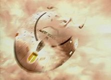

|

Clique aqui
para visitar o
Acervo de colunas

|
Errando a cada ano-luz Gostaria de iniciar a coluna dizendo que no, no sou anti-Jornada, infiel, herege ou coisa do tipo. Alis, depois muito tempo assisti ao episdio final de Voyager de novo e fui bem menos crtico do que na primeira vez. Acho a srie infinitamente superior a Enterprise em todos os aspectos e, quero acreditar, no estou sozinho nesse ponto - tambm espero que depois desta colocao ainda haja algum lendo o resto do texto. Posto isso, e justamente por minha paixo pelo seriado, quero desabafar sobre um dos aspectos que mais me incomodam, em se tratando da verossimilhana dos roteiros. A relao distncia-tempo-velocidade, que foi pobremente trabalhada ao longo dos sete anos de exibio e que, na minha opinio, revela uma das mais graves falhas na continuidade da saga. H quem diga que eu esteja tentando criar mais um motivo para avalanches de crticas negativas ou que me prenda a mincias. Em parte, essas pessoas esto certas. No que eu queira criar novas disputas entre as "faces" trekkers, mas estou preso, sim, a detalhes, pois foi justamente o cuidado com os pormenores que me atraram ao universo de Jornada em primeiro lugar. Ora, so eles que tornam esse universo to crvel e real. Ento, vamos questo levantada. No episdio-piloto da srie, "Caretaker", fica estabelecido que a USS Voyager, uma nave recm-comissionada, surpreendida pelo impacto de uma onda tetrion-coerente ao entrar na regio do espao conhecida por "Badlands". O fenmeno a desloca instantaneamente incrvel distncia de 70.000 anos-luz. Naquele lugar, a presena da Voyager acaba gerando um conflito e, na tentativa de neutralizar uma grande ameaa, a capit Kathryn Janeway acaba destruindo o nico meio de voltar para casa, deixando a sua nave e tripulao isoladas no quadrante mais longnquo da galxia. Janeway passa a ter como meta principal a viagem de volta, algo que, mesmo velocidade mxima - dobra 9,975 - consumiria cerca de 75 anos.  A dvida que me levou a escrever esta coluna no diz respeito distncia ou velocidade. Elas so grandezas "inquestionveis". Era o tempo de viagem que me parecia errado. Tendo sido estabelecido em "The 37's", da segunda temporada, que dobra 9,975 corresponde a 4 bilhes de milhas por segundo e sabendo, pelas aulas de Fsica, que 1 ano-luz equivale distncia percorrida em um ano na velocidade da luz, ou 3 . 10 8 m/s, tem-se os meios de refazer as contas. Como no sou bom com nmeros, pedi para um amigo que estuda Matemtica na Unicamp fazer todos os clculos para mim (agradeo a Hector pela ajuda e dedico a ele a coluna da semana). A vai: D
= 70.000 anos-luz Primeiro passo: calcular a distncia em metros D = 70.000 anos-luz Dm
= 365 . 24 . 60 . 60 . 3 .10 8
x 7 . 10
4 Dm = 365 . 24 . 36 . 3 . 7 . 10 14
V = 4 . 10 9
. 1,6 . 10 3 V = 4 . 1,6 . 10 12 m/s
V = D t = D
= 6622560 . 10 14 t = 1034775 . 10 2 = 103477500 (s) : 60 (min) t = 28743 (h) t = 1197,6 (meses)
Conforme citei anteriormente, no episdio "Unity", do terceiro ano, o comandante Chakotay menciona que a tripulao espera chegar em casa em 67 anos. Ele parte da premissa simplista de que a Voyager percorreu, nas trs primeiras temporadas, a simblica distncia de 3.000 anos-luz. Tal suposio falha, j que a nave no viajava velocidade mxima. Na verdade, suas paradas e desvios de rumo constantes devem ter atrasado e muito a viagem, algo evidenciado na fala do Doutor, em "The Cloud": "Why
pretend we're going home at all? All we're going to do is
investigate every cubic milimeter of this quadrant, aren't we?" , Doutor, foi exatamente o que aconteceu. Mas vamos em frente. Logo no incio do quarto ano, no episdio "The Gift", a nave d o seu primeiro grande salto atravs do espao, deslocando-se quase 10.000 anos-luz em direo Terra. A prpria capit diz, em um dos momentos mais emocionantes da srie, referindo-se a Kes: "She's
thrown us safely beyond Borg space, ten years closer to home". Fundamentando-se no pressuposto colocado por Chakotay, a USS Voyager deveria estar, nesse momento, a 57 anos de casa. Mas, alguns outros pulos e dois anos mais tarde, chegamos ao episdio duplo "Dark Frontier", em que a tripulao invade uma nave Borg para roubar um dispositivo de transdobra. Aqui, a suposio do comandante cai totalmente em descrdito, j que, ao final da histria, a capit revela em seu dirio de bordo que a Voyager cortou 15 anos de viagem depois de instalar a tecnologia roubada e cruzar 20.000 anos-luz. E por a seguem as discrepncias, at o final da srie. A noo de espao, que deveria ter sido considerada uma prioridade para os consultores cientficos de Voyager e uma exigncia dos roteiristas, foi tratada com tanta superficialidade e base do senso comum que serviu mais como suporte "tecnobaboseira" da srie do que como aliado na construo de histrias mais coerentes e realistas - o grande diferencial de Jornada, em relao a outras franquias de fico-cientfica. Na minha opinio, a nica vez em que se teve a sensao de que a viagem importava para os tripulantes da nave foi em "The Gift". Depois disso, coincidindo com a entrada da personagem Seven of Nine e a decorrente banalizao dos Borgs, esse trao desapareceu por completo. Hirogens apareceram e sumiram num raio de 20.000 anos-luz, Talaxianos foram encontrados a 40.000 anos-luz de seu planeta-natal. Isso, sem citar as inmeras vezes em que Ferengis, Klingons e at humanos - todos nativos do Quadrante Alfa - davam o ar da graa no supostamente inexplorado Quadrante Delta. Isto , desprezou-se o elemento primordial da srie, o espao, que no mais significava a fronteira final. Uma esculhambao, uma pena; eles erraram a cada ano-luz. Enfim, so coisas de Jornada nas Estrelas: Voyager. Ame-a ou deixe-a.
Daniel
Sasaki co-editor do Trek
Brasilis |